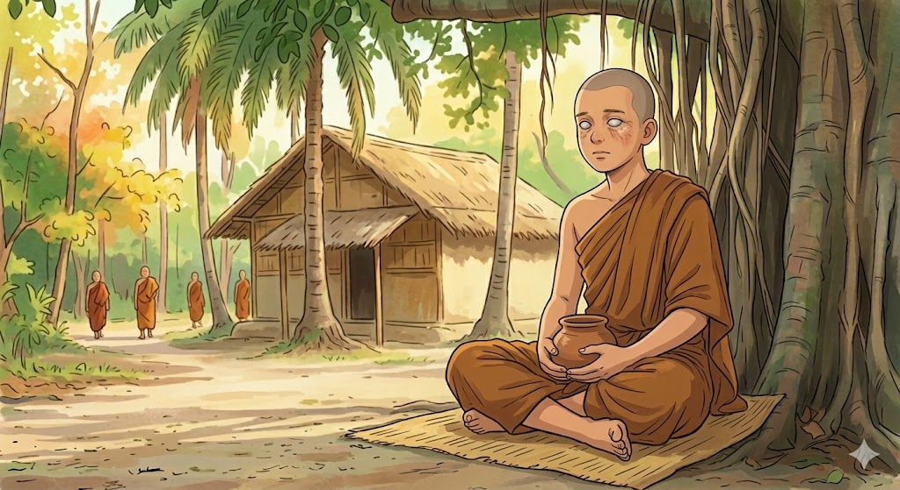
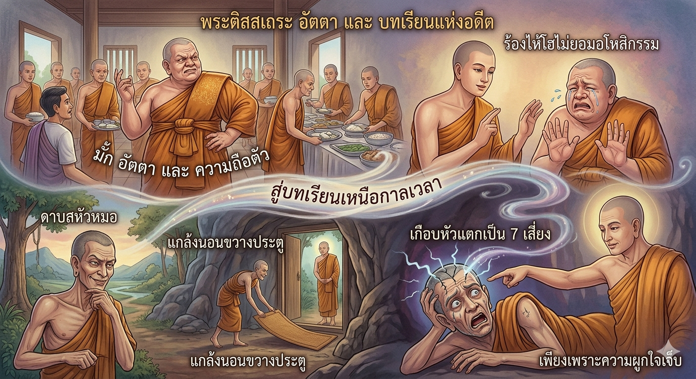

วิดิโอนิทานทั้งหมด
เลือกรับชมวิดิโอนิทานธรรมบทที่คุณสนใจ

5:30พระจักขุบาลเถระ
"ใจเป็นประธานในสิ่งทั้งปวง"
4:45
มัฏฐกุณฑลีมาณพ
"ใจเป็นประธานในสิ่งทั้งปวง"

6:12พระติสสเถระ
"เวรย่อมไม่ระงับด้วยการจองเวร"
7:20
นางกาลียักษิณี
"เวรย่อมไม่ระงับด้วยการจองเวร"
5:55
พระนันทเถระ
"จิตที่ฝึกมาไม่ดี ย่อมถูกราคะครอบงำ"
 8:10
8:10
ปัณฑิตสามเณร
"จิตที่ได้รับการแผ้วถางย่อมเข้าถึงสัจธรรม"
 6:45
6:45
พระมหากาลเถระ
"มารย่อมพ่ายแพ้ผู้ไม่สำรวมในอินทรีย์"
 9:30
9:30
พระเทวทัต
"ผู้ทำกรรมชั่วย่อมเดือดร้อนในโลกทั้งสอง"
 7:15
7:15
นางจิญจมาณวิกา
"การพูดเท็จโดยไม่มีความละอาย"
 5:40
5:40
นายจุนทสูกริก
"ผู้ทำกรรมชั่วย่อมเดือดร้อนใจ"
 6:20
6:20
ธัมมิกอุบาสก
"ผู้ทำกรรมดีย่อมเพลิดเพลินใจ"
 10:00
10:00
มหาชนทูลถามเรื่องพระเทวทัต
"ผู้มีกิเลสย่อมไม่คู่ควรนุ่งห่มผ้ากาสาว"
 8:45
8:45
พระโกกาลิกะ
"คนพาลพูดคำชั่วย่อมฟันตัวเอง"
 7:30
7:30
พระโสภิตเถระ
"จิตที่แผ้วถางดีย่อมเข้าถึงสัจธรรม"
 9:15
9:15
พระอุบลวรรณาเถรี
"ผู้มีจิตสงบย่อมใช้ชีวิตอย่างเป็นสุข"
 6:50
6:50
นันทิยอุบาสก
"บุญย่อมต้อนรับผู้ทำบุญ"
 8:00
8:00
สัญชัยปริพาชก
"ผู้เข้าใจสิ่งไม่เป็นสาระว่าเป็นสาระ"
 7:45
7:45
นันทโคปาลกะ
"โจรย่อมทำความพินาศให้แก่โจร"
8:30
พระจิตตหัตถเถระ
"จิตของผู้ไม่มั่นคงในพระสัทธรรม"
10:15
พระกุมารกัสสปะเถระ
"ปัญญาเปรียบเสมือนประทีปที่ส่องทาง"